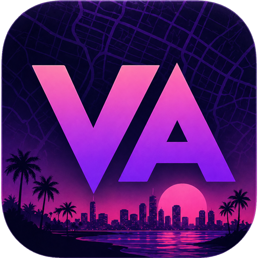

Sokyra Labs
000 %
Sokyra Labs
EN
EN
RU
UK
AR
DA
DE
ES
FI
FR
HI
IT
JA
NB
NL
PL
SV
TR
ZH
←
Back to
Vice Atlas
←
Back to
Vice Atlas

Vice Atlas
GTA VI GIVEAWAY
GIVEAWAY RULES
Last updated:
November 8, 2026
Prize: GTA VI for PC (Steam key)
sokyra-labs.github.io
· © 2026 Sokyra Labs
Terms of Service